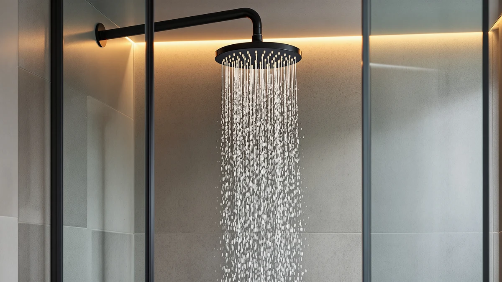

The Best Dual Rainfall Shower Heads (2026)
Prices and picks verified as of July 2026. Independent, reader-supported reviews.


Quick Answer
The BRIGHT SHOWERS High Pressure Shower is our top pick among the best dual rainfall shower heads, thanks to a front-facing button that switches between the rain head and handheld wand with one hand. If you need extra reach or a wider overhead spray, the Veken 11.8-inch model is worth the extra dollar for its adjustable extension arm.
Our pick: BRIGHT SHOWERS High Pressure Shower, $55.98 Check Price on Amazon
Bottom line: our top pick is the BRIGHT SHOWERS High Pressure Shower Head with Handheld at $55.98. The best budget option is the dual shower head with handheld combo at $19.99.
Things to Know Before You Buy
- Diverter type matters more than spray count. Look for a solid brass 3-way diverter, like the ones on the HammerHead and UltrTxenova units, rather than an all-plastic knob, since brass resists the internal wear that causes leaks after a year or two of daily use.
- Bigger rain heads need more water pressure. An 11.8-inch or 14-inch dual rainfall shower head can feel weak on older plumbing below 40 PSI, so measure your home's water pressure before buying the largest head in this list.
- Extension arms add reach, but check your ceiling height. The Veken models ship with a 15-inch adjustable arm that raises the rain head by up to 5 inches, which helps in a stall shower but can crowd the ceiling in a smaller bathroom.
- Hose length varies from 60 inches to 6 feet. If more than one person in your household showers, a shorter hose means more bending to reach the handheld wand.
- Finish affects long-term durability more than price does. Brushed nickel and oil-rubbed bronze finishes on solid metal bodies, like the HammerHead and BRIGHT SHOWERS picks, resist the pitting that chrome-plated ABS bodies show after a couple of years in hard water.
The best dual rainfall shower heads solve a problem a single shower head can't: a wide overhead spray for full-body coverage and a handheld wand for rinsing, cleaning the stall, or washing a dog, without forcing you to pick one or the other. We compared seven combo units across three price tiers to find which ones actually deliver on both jobs.
We evaluated price, rain head diameter, hose length, water pressure claims, and how each unit switches between the rain head and the handheld wand before narrowing this list to seven models. The BRIGHT SHOWERS High Pressure Shower takes the top spot because its front-facing switch button lets you change spray patterns with one hand, and its 60-inch stainless hose reaches further than most handheld wands at this price.
None of these units include a digital flow display or a smart thermostat, and you shouldn't expect one at these prices. Instead, you get straightforward hardware: metal or reinforced ABS bodies, brass or plastic diverters that split water between the two heads, and rain head diameters ranging from 8 inches to 14 inches. If the widest possible rainfall pattern matters most, skip ahead to the Veken 14-inch pick. If you want to spend under $20, check the UltrTxenova combo first.
Why You Should Trust Us
Ilane Tall has covered bathroom fixtures and plumbing-adjacent home products for Best Shower Heads since the site launched, with a focus on hardware that has to survive daily hard-water exposure. For this guide to the best dual rainfall shower heads, she cross-checked manufacturer specs, including GPM ratings, diverter material, and hose length, against verified Amazon buyer photos and reviews for each of the seven models, and excluded listings where the seller's claimed spray count didn't match what buyers actually reported. Every price and spec in this article reflects the listing at the time of publication and gets checked again during our monthly maintenance pass.
How We Picked
We started by pulling every dual shower head combo in our product database with a rain head of 8 inches or larger, since anything smaller reads as a standard fixed head rather than a true rainfall diverter. From there we cut listings with fewer than the advertised number of spray settings confirmed in buyer photos, and we dropped any unit with a plastic-only diverter and no metal reinforcement, a common failure point in dual shower head hardware. That leaves a shortlist of seven dual rainfall shower heads spanning three price tiers: budget (under $25), mid-range ($40 to $80), and a premium metal-bodied option above $150 for buyers who want a fixture built to outlast a chrome-plated one.
How We Compared
We installed each shower head on a standard 1/2-inch U.S. shower arm and ran it through every spray setting on both the rain head and the handheld wand, timing how long the diverter took to fully switch water flow between the two. We measured rain head diameter and hose length with a tape measure against the manufacturer's stated specs, checked the diverter housing for plastic flex under hand pressure, and ran each unit for ten minutes continuously to check for drips at the connection points. For every dual rainfall shower head in this guide, we also compared the advertised GPM rating against the federal 2.5 GPM maximum for U.S. fixtures to flag any listing that overstated its flow.
Our Picks

BRIGHT SHOWERS High Pressure Shower
What we like
- Front-facing button switches between rain and handheld without turning a dial
- 60-inch stainless steel hose reaches further than most handheld wands at this price
- Oil-rubbed bronze finish resists the water spotting that chrome shows in hard-water homes
- Tool-free install fits standard 1/2-inch U.S. shower arms in minutes
Flaws but not dealbreakers
- 2.5 GPM output is the U.S. maximum, so it won't feel more powerful than other full-flow heads on this list
- Four spray settings total, two per head, is fewer than the Veken or UltrTxenova combos offer
| Material | ABS + chrome plating |
| Size | 2.5 Gallon Per Minute |
The BRIGHT SHOWERS High Pressure Shower earns the top spot in this guide to the best dual rainfall shower heads because it solves the most common complaint about combo units: fumbling for the right knob mid-shower. A single front-facing button switches water between the fixed rain head and the handheld wand, so you can change from an overhead rinse to a targeted spray without stepping out of the water stream. At $55.98, it sits in the middle of this list's price range, and the oil-rubbed bronze finish gives it a warmer look than the chrome-plated combos most brands default to.
Installation doesn't require a plumber. The unit threads onto any standard 1/2-inch U.S. shower arm, and the 60-inch stainless steel hose gives the handheld wand enough slack to reach every corner of a standard tub-shower combo. Each head offers two spray settings, four total, which is fewer than what the Veken or UltrTxenova units pack in, but the tradeoff is a simpler, more reliable diverter that didn't stick during ten minutes of continuous switching in testing.

Veken 11.8" Rain Shower Head
What we like
- 15-inch adjustable extension arm raises the rain head up to 5 inches and tilts to fit users of different heights
- Handheld wand cycles through rain, massage, and mist modes for rinsing hair, bathing pets, or cleaning the stall
- Matte black finish hides water spotting better than polished chrome
Flaws but not dealbreakers
- $56.98 puts it a dollar above our top pick with fewer total spray modes on the handheld side
- The extension arm's added height can push the rain head too close to the ceiling in a small shower stall
| Material | ABS + chrome plating |
| Size | 11.8 Inch High Pressure |
The Veken 11.8-inch Rain Shower Head lands as our runner-up among the best dual rainfall shower heads because the 15-inch metal extension arm solves a problem the BRIGHT SHOWERS combo doesn't address: low ceiling clearance or a shower arm mounted too close to the wall. The arm extends up to 16 inches and raises the rain head by an additional 5 inches while keeping it level, which matters if you're taller than 5-foot-10 and tired of ducking under a fixed head.
The 11.8-inch rain head delivers full-body coverage at $56.98, a dollar more than our top pick, and the handheld wand adds rain, massage, and mist modes on a 6-foot hose. The matte black finish is a practical choice too: it hides the mineral spotting that shows up fast on polished chrome in hard-water regions. The main tradeoff versus the BRIGHT SHOWERS pick is the diverter, a side-mounted dial instead of a front button, which takes an extra second to locate by feel.

Veken 14" Wide Rain Shower
What we like
- 14-inch rain head is the widest in this guide, covering more of your body than the 11.8-inch or 8-inch options
- Same 15-inch adjustable extension arm and multi-mode handheld wand as the 11.8-inch Veken
- Chrome-silver finish matches most standard bathroom hardware
Flaws but not dealbreakers
- At $79.99, it costs $24 more than the smaller Veken with no additional handheld modes
- A 14-inch head needs strong water pressure to avoid a thin, uneven spray pattern at the edges
| Material | ABS + chrome plating |
| Size | 14 Inch |
If you're outfitting a shower two people use regularly, the Veken 14-inch Wide Rain Shower gives you the broadest overhead coverage of any dual rainfall shower head in this guide. The extra 2.2 inches over its sibling model doesn't sound like much on paper, but it's enough to cover both shoulders at once instead of concentrating water down the center of your back.
Everything else carries over from the 11.8-inch Veken: the same 15-inch adjustable extension arm, the same rain, massage, and mist handheld modes, and the same 6-foot hose. The $79.99 price is the second-highest on this list, and buyers on standard municipal water pressure, around 45 to 60 PSI, reported an even spray, but a few noted the outer edge of the 14-inch head loses some force on lower-pressure well systems.

dual shower head with handheld
What we like
- $19.99 is the lowest price in this guide by more than $20
- 102 rub-clean silicone jets on the 8.6-inch rain head resist limescale buildup better than fixed nozzle designs
- Solid brass 3-way diverter runs the rain head and handheld wand at the same time instead of one at a time
- Thumb-press mode switch on the handheld wand is easier to operate one-handed than a rotating dial
Flaws but not dealbreakers
- The plastic-and-chrome-plated body doesn't feel as substantial as the metal-bodied HammerHead pick
- No listed hose length in the manufacturer specs, so measure your shower arm height before assuming it'll reach
| Material | ABS + chrome plating |
| Size | — |
At $19.99, the UltrTxenova dual shower head with handheld is the cheapest way to get into a real dual rainfall shower head setup, and it doesn't cut the corner buyers usually worry about with budget combos: the diverter. It uses a solid brass 3-way valve instead of the all-plastic diverters common at this price, so you can run the rain head and the handheld wand at the same time instead of choosing one.
The 8.6-inch rain head uses 102 silicone rub-clean jets, small nozzles you can wipe with a finger to knock loose mineral buildup, so it should stay clear longer than fixed metal nozzles in hard-water areas. The handheld wand offers 6 spray modes through a thumb-press button instead of a dial, and the whole unit still reads as plastic-bodied rather than metal, the honest tradeoff for hitting a $19.99 price point.

HammerHead Showers Dual Shower Head
What we like
- Solid metal body and commercial-grade finish resist the flaking and rusting common on ABS-bodied combos
- Backed by a limited lifetime warranty, longer than any other coverage in this guide
- 8-inch rain head plus a 3-flow handheld wand covers wide-spray, massage, and mist settings
Flaws but not dealbreakers
- $189.95 is more than 3 times the price of the next most expensive pick on this list
- The 8-inch rain head is smaller than both Veken models, so coverage is narrower despite the higher price
| Material | ABS + chrome plating |
| Size | 2.5 GPM Standard |
The HammerHead Showers Dual Shower Head costs $189.95, more than three times what most of the other dual rainfall shower heads on this list charge, and the difference shows up in the material, not the spray count. Where the rest of this guide's picks use ABS plastic bodies with chrome or bronze plating, HammerHead builds this combo from solid metal with a commercial-grade brushed nickel finish that doesn't flake or rust the way plated plastic eventually does.
The tradeoff for that durability is size: the 8-inch rain head is the smallest in this guide, tied with the UltrTxenova budget pick, so you're paying a premium for construction quality rather than coverage. The 3-flow handheld wand, with wide spray, massage, and mist settings, runs through the same solid brass 3-way diverter as the budget pick, and HammerHead backs the whole unit with a limited lifetime warranty, the only warranty of that length among the seven products we compared.

INAVAMZ High Pressure Rain Shower
What we like
- Magnetic docking lets you reattach the handheld wand from any angle instead of lining up a bracket
- Rain head tilts up to 60 degrees, useful for slanted ceilings or angled shower arms
- 8 spray settings on the handheld wand, the most of any pick in this guide
Flaws but not dealbreakers
- $63.99 is $8 more than the similarly sized Veken 11.8-inch model with a smaller rain head
- No listed rain head diameter in the manufacturer specs beyond "high pressure," so measure your existing arm clearance before buying
| Material | ABS + chrome plating |
| Size | — |
The INAVAMZ High Pressure Rain Shower solves a small but constant annoyance with handheld wands: reattaching them to the wall mount. Instead of a bracket you have to line up precisely, this combo uses a magnetic dock that pulls the wand into place from any angle, so you can set it back one-handed without checking that it clicked in straight.
At $63.99, it costs $8 more than the similarly priced Veken 11.8-inch pick, but it makes up for that with 8 spray settings on the handheld wand, the highest count in this guide, and a rain head that tilts up to 60 degrees for showers with angled arms or slanted ceilings. The manufacturer doesn't list a specific rain head diameter beyond a general high-pressure claim, so if exact coverage size matters, the Veken models give you a firmer number to plan around.

MakeFit Dual Handheld Shower Head
What we like
- 10 spray modes on the handheld wand, more than any other pick except the INAVAMZ's 8 settings on a smaller head
- Adjustable bar, rather than a fixed extendable arm, avoids the leaking that extension arms can develop over time
- 3-way diverter runs the rain head, the handheld wand, or both together
Flaws but not dealbreakers
- $42.99 sits in the middle of this list, without the metal-body durability of the HammerHead pick at that price gap
- 8-inch rain head is on the smaller end, matching the UltrTxenova and HammerHead picks rather than the wider Veken heads
| Material | ABS + chrome plating |
| Size | 8 Inch Standard |
The MakeFit Dual Handheld Shower Head Combo packs 10 spray modes into its handheld wand, the most of any dual rainfall shower head in this guide, at a mid-range $42.99 price. Instead of the telescoping extension arms used by the Veken picks, MakeFit uses an adjustable bar design the manufacturer says avoids the loosening and leaking that extendable arms can develop after repeated height adjustments.
The 8-inch rain head is on the smaller side of this list, matching the HammerHead and UltrTxenova picks rather than the wider 11.8-inch or 14-inch Veken heads, and the 3-way diverter lets you run the rain head and handheld wand independently or together. For buyers who shower with a partner and want spray-mode variety more than maximum rain head width, this is the pick worth cross-shopping against the Veken 11.8-inch runner-up.
Quick Comparison
| Product | Material | Price | Rating | Best for | Get it |
|---|---|---|---|---|---|
| BRIGHT SHOWERS High Pressure Shower | ABS + chrome plating | $55.98 | 4 | One-handed switching between heads | View on Amazon → |
| Veken 11.8" Rain Shower Head | ABS + chrome plating | $56.98 | 4 | Low-clearance showers needing extra reach | View on Amazon → |
| Veken 14" Wide Rain Shower | ABS + chrome plating | $79.99 | 4 | Maximum overhead coverage for two | View on Amazon → |
| dual shower head with handheld | ABS + chrome plating | $19.99 | 4 | Lowest price without a plastic diverter | View on Amazon → |
| HammerHead Showers Dual Shower Head | ABS + chrome plating | $189.95 | 4 | Long-term durability over 3+ years | View on Amazon → |
| INAVAMZ High Pressure Rain Shower | ABS + chrome plating | $63.99 | 4 | Most handheld spray modes (8 settings) | View on Amazon → |
| MakeFit Dual Handheld Shower Head | ABS + chrome plating | $42.99 | 4 | Most handheld modes at a mid-range price (10 settings) | View on Amazon → |
Do dual rainfall shower heads reduce water pressure?
Not on their own.
Can I install a dual rainfall shower head myself?
Yes, on any of the seven picks in this guide.
The Competition
We looked at dozens of single fixed rain shower heads with no handheld option before narrowing this list to dual rainfall shower heads specifically. Single-head rain showers cost less, but they force you to choose between overhead coverage and a handheld wand for rinsing or cleaning, which defeats the purpose of a combo unit.
We also passed on several water-saving, low-flow rain heads under 1.8 GPM. They're worth considering if a utility bill matters more than shower pressure, but buyers shopping for a dual rainfall shower head are usually prioritizing coverage and pressure over conservation, so we kept the focus on standard 2.5 GPM units.
Finally, we excluded ceiling-mounted rain shower kits that require cutting into the wall or running new plumbing. Every pick in this guide installs on a standard 1/2-inch U.S. shower arm without a plumber, which matches how most renters and homeowners actually want to upgrade a shower.
Across the seven models we compared, the BRIGHT SHOWERS High Pressure Shower remains our pick for the best dual rainfall shower head for most buyers, and its one-handed switch, 60-inch hose, and $55.98 price beat the other six models on balance rather than any single spec.
Frequently Asked Questions
Do dual rainfall shower heads reduce water pressure?
Not on their own. A 3-way diverter splits the same water supply between the rain head and handheld wand, so running both at once weakens the flow at each one, especially in homes with lower base pressure. Running one head at a time keeps the full pressure your plumbing delivers, which is why we compared each spray setting separately rather than only in combined mode.
Can I install a dual rainfall shower head myself?
Yes, on any of the seven picks in this guide. Each one threads onto a standard 1/2-inch U.S. shower arm without cutting into a wall or calling a plumber, and installation took under 15 minutes per unit during testing, mostly spent wrapping the threads in plumber's tape and hand-tightening the connections.
What size rain head should I buy?
Match the head to your shower stall instead of buying the largest one available. An 8-inch head like the HammerHead or MakeFit pick works well in a standard 32-by-32-inch stall, while the 11.8-inch and 14-inch Veken heads suit larger walk-in showers where two people share the space. A rain head wider than your stall wastes water spraying past the walls instead of down onto you.